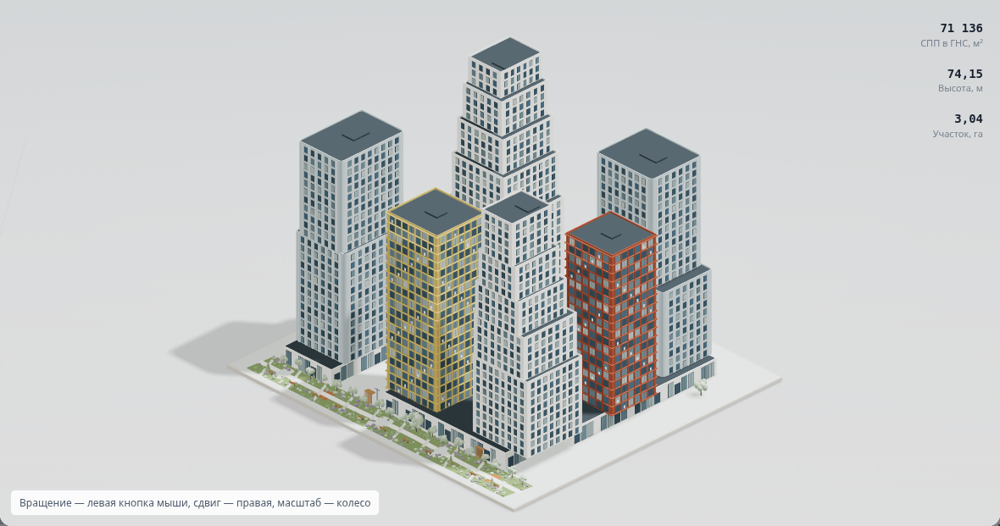
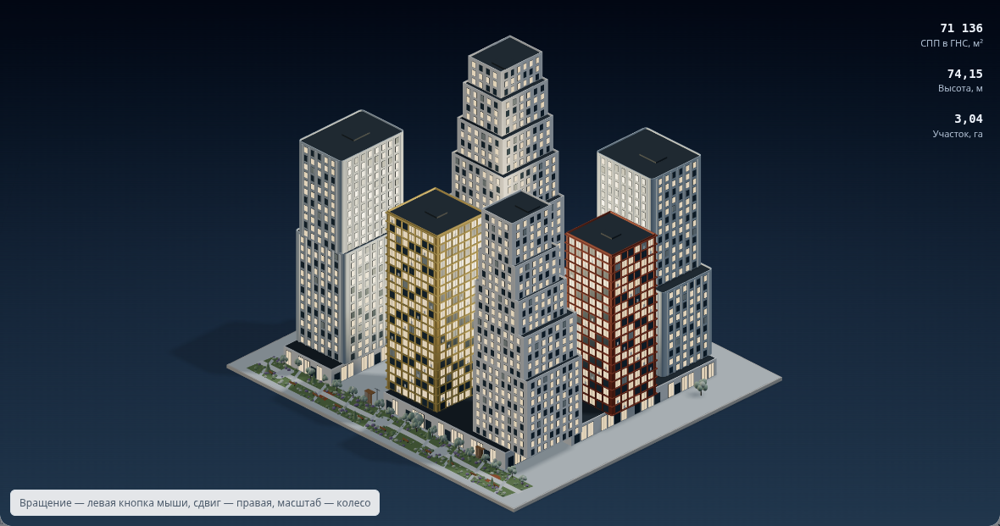
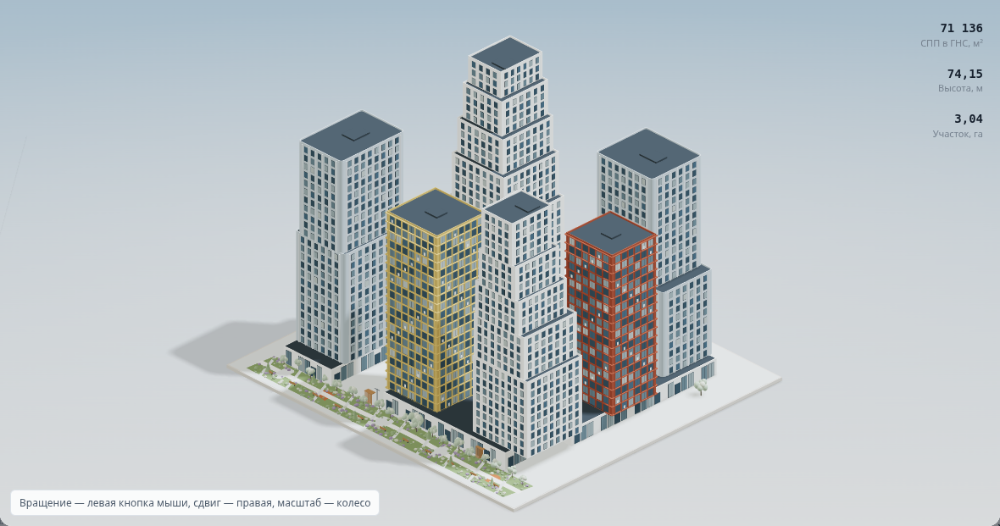
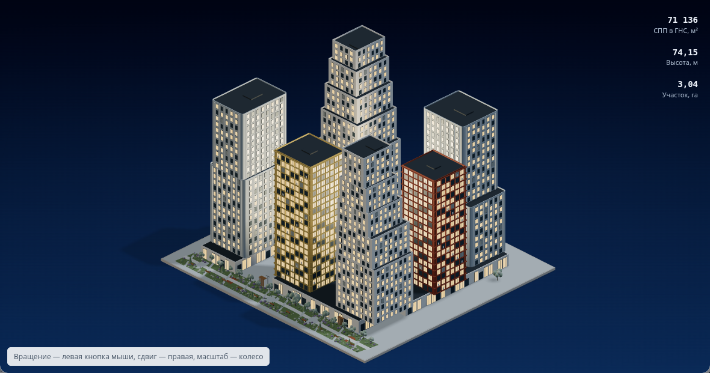
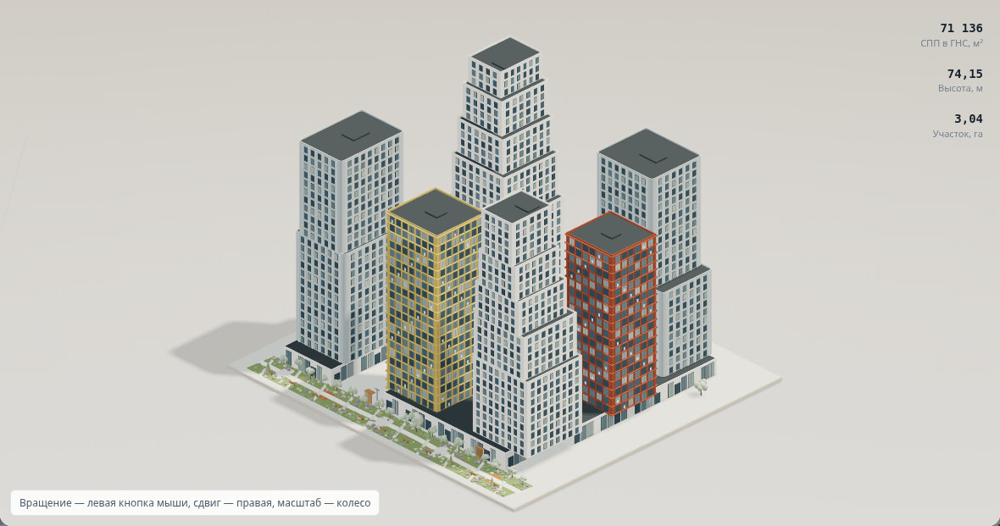
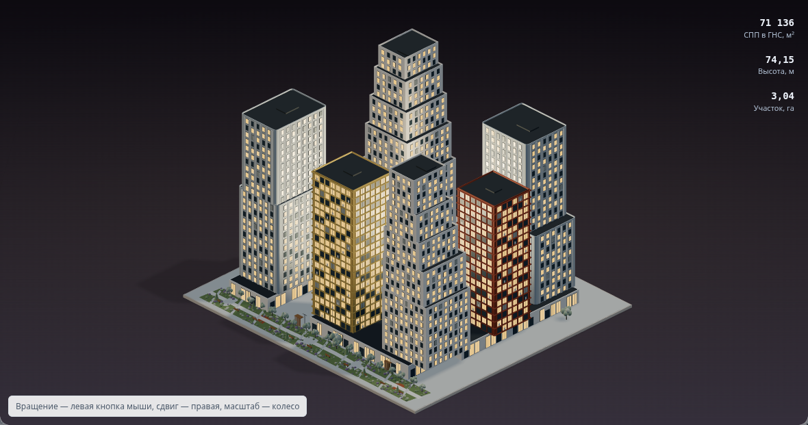
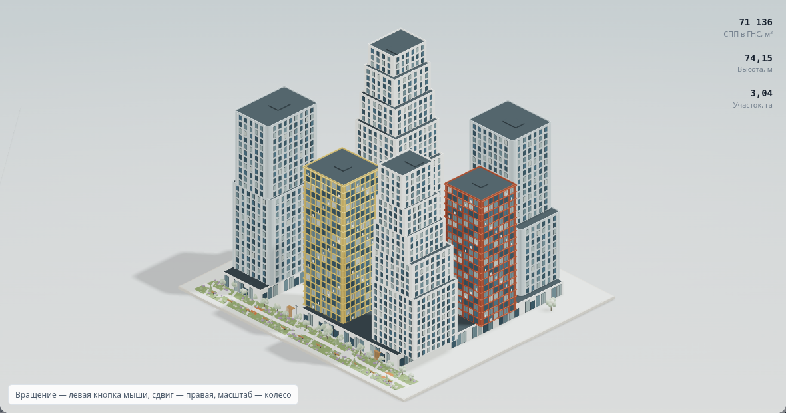
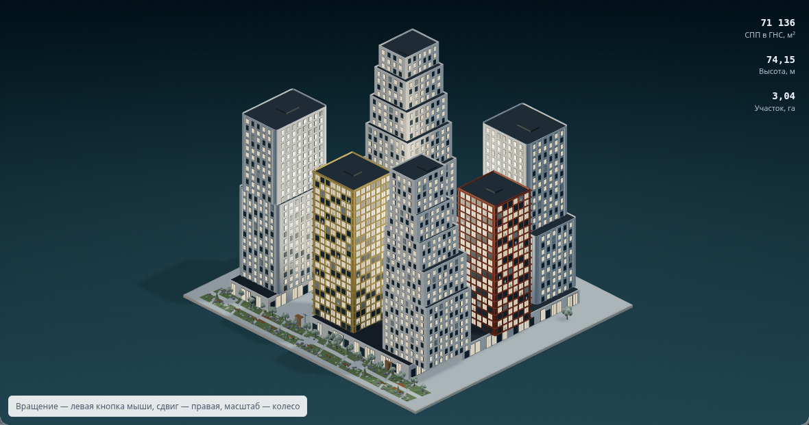
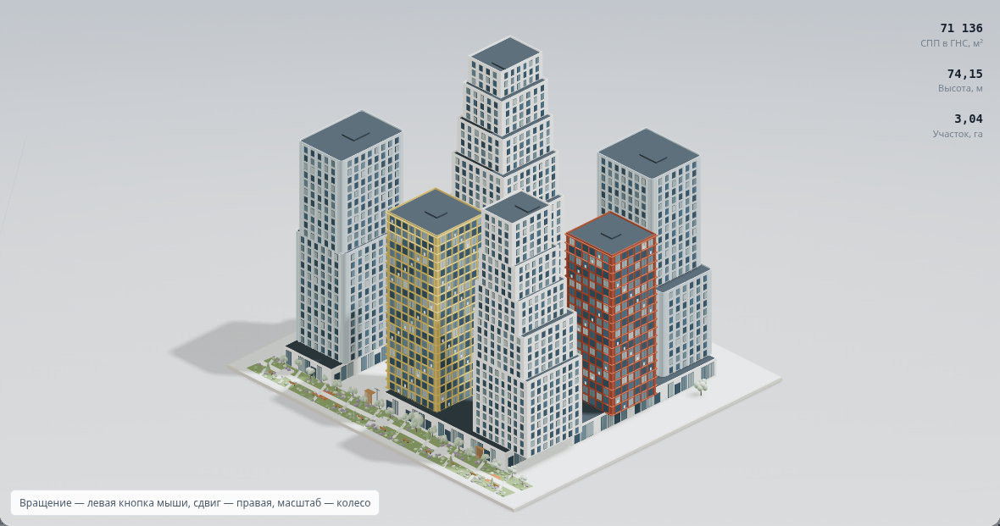

Одна модель, один ракурс, существующий Three.js сайта. Градиентный фон и разная световая атмосфера.
Это браузерные прототипы; опубликованный сайт не изменён. Внешние шрифты в снимках заменены системными.
Холодный светлый фон днём, глубокий графит ночью. Самый близкий к палитре сайта.


Небесный градиент днём и насыщенный синий ночью. Больше ощущения открытого пространства.


Молочно-песочный день и тёплая дымчатая ночь. Мягкая, более камерная подача.


Серо-голубой день и приглушённый сине-зелёный вечерний тон. Спокойный контраст.


Направленный дневной свет и почти чёрная ночь. Самый выразительный контраст фасадов и окон.
